Accueil / Nos projets
Portfolio
Nos projets et réalisations
Les missions de BEGCED, présentées avec l’accord de nos clients et partenaires.
Innovation BEGCED · en développement
Mbongo Nzela – prototype
Service numérique de coordination des liquidités de monnaie mobile entre les villages du secteur de Dongo (Dongo, Imesse, Inyele, Bokona) et les villes de Gemena et Kinshasa. Version de démonstration avec des données fictives : aucune transaction réelle.
Essayer le prototypeUrbanRisk Mont-Ngafula – carte satellite et pluie prévue
Carte satellite réelle et zoomable de toute la commune de Mont-Ngafula : chacun peut retrouver son quartier, son avenue et sa maison, et voir la pluie prévue sur 72 heures et la vigilance expérimentale dans les bassins pilotes. Service public et gratuit.
Ouvrir la carteSur le terrain
BEGCED en images
Chantiers suivis par nos ingénieurs, inventaires en forêt et en tourbière, cartes produites, sensibilisation des communautés et vie de l’équipe. Cliquez sur une photo pour l’agrandir.
Génie civil et bâtiment


Implantation et terrassement

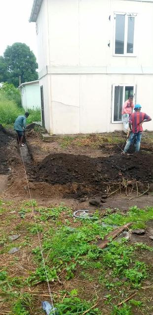
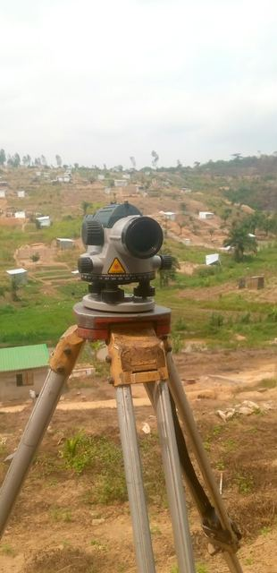
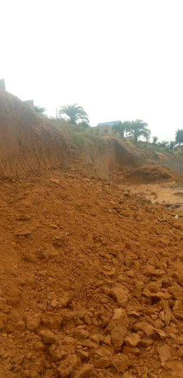
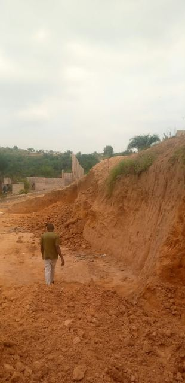
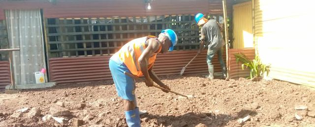
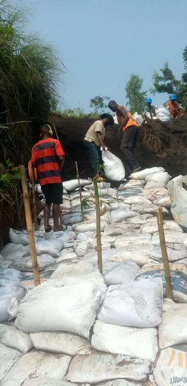
Fondations et soutènement
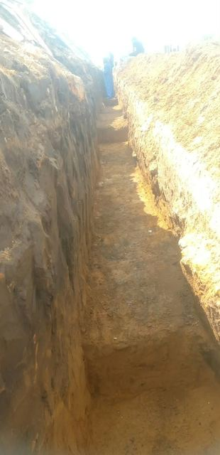
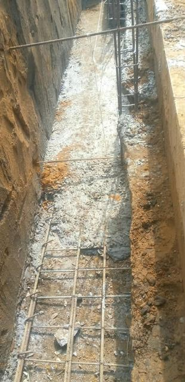
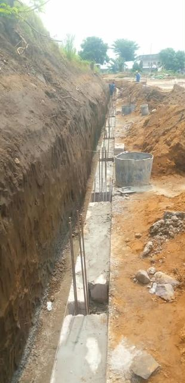


Gros œuvre et dalles
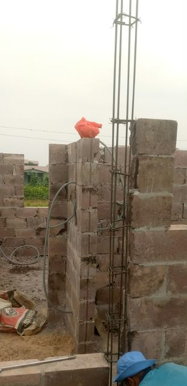
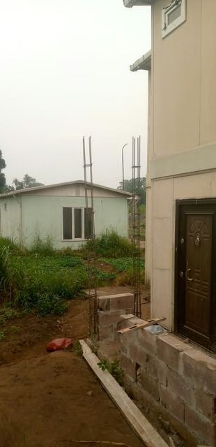
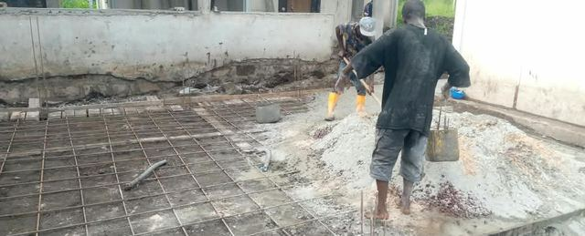
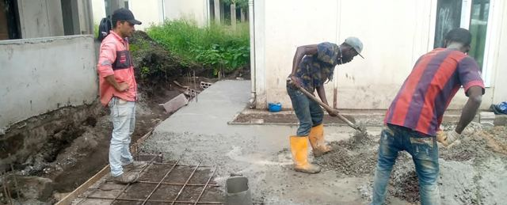
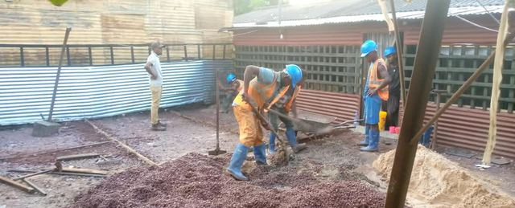
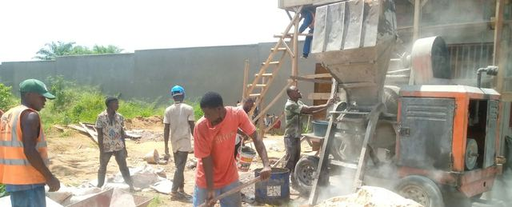

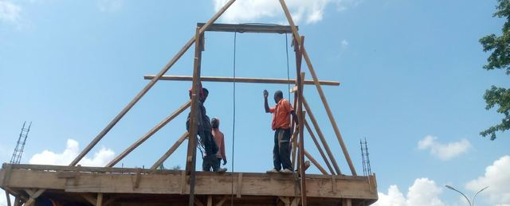
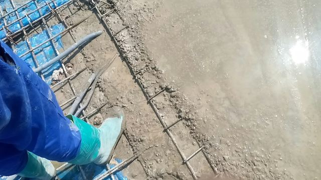
Ouvrage d’art : coulage de la dalle d’un pont

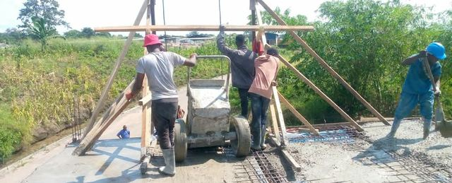
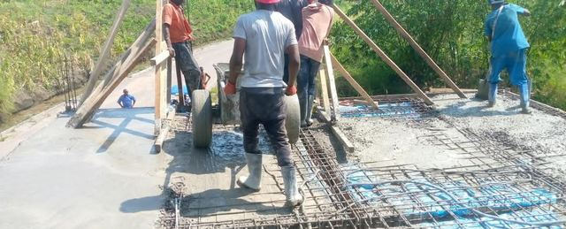
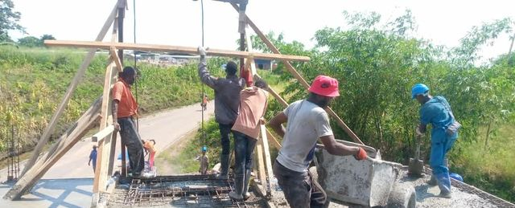
Toiture et second œuvre

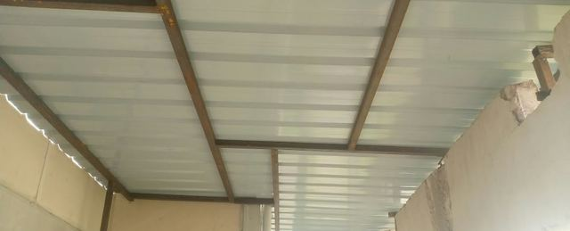
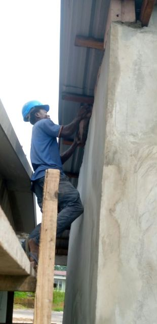
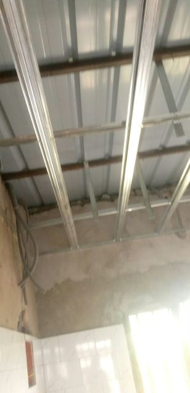

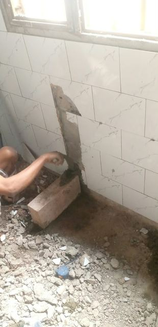
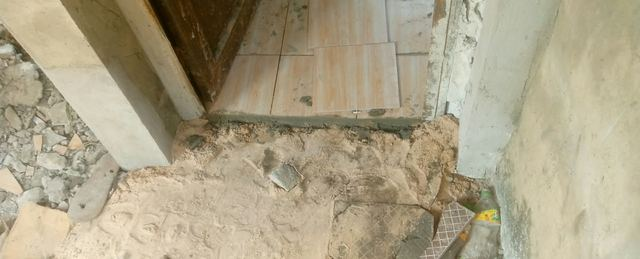
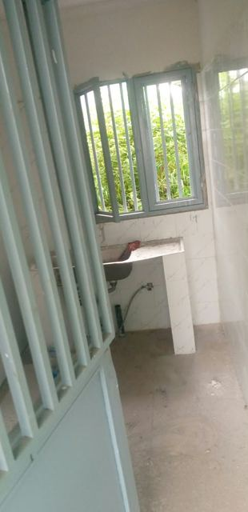
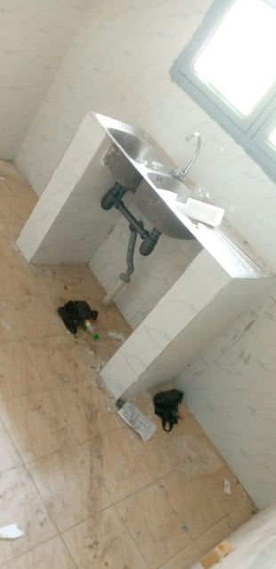
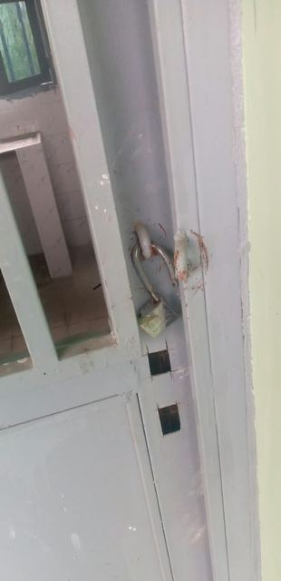
Électricité
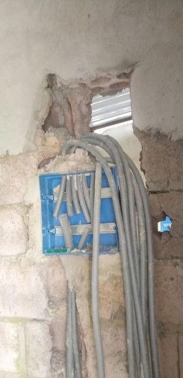
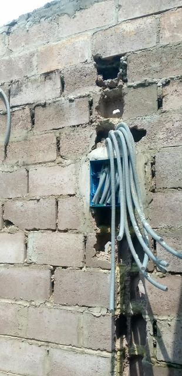
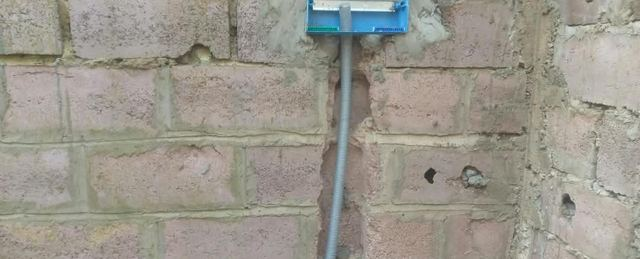

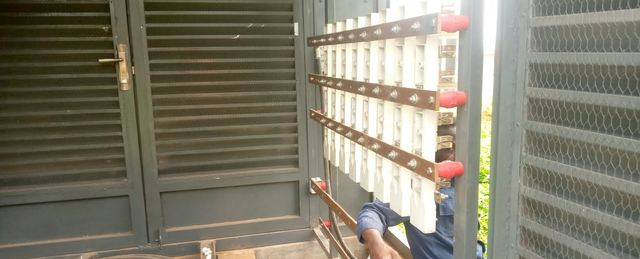
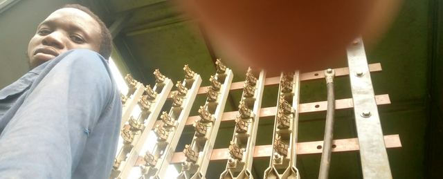
Assainissement : canalisations, fosses septiques et filtres
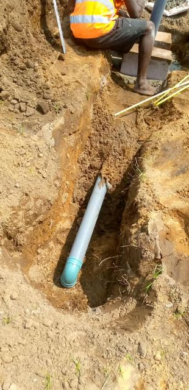
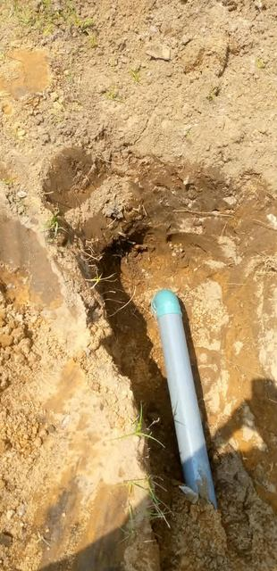
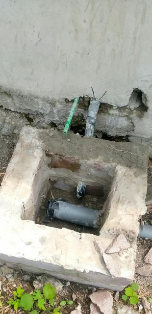
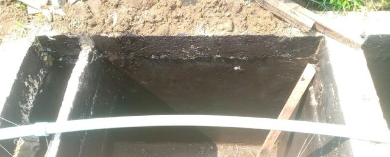
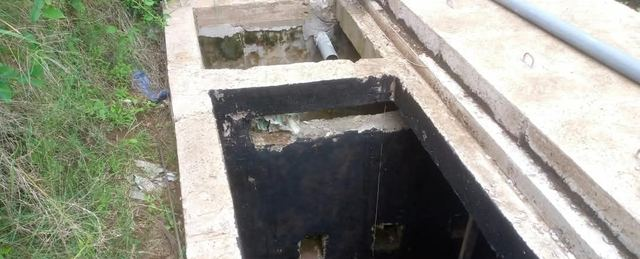
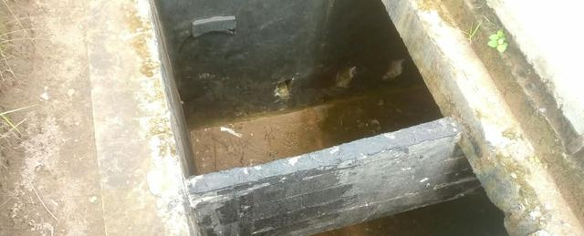
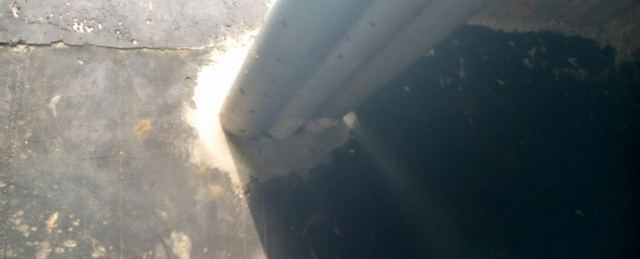

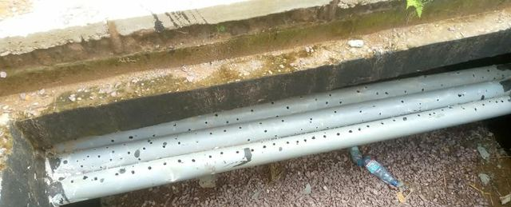
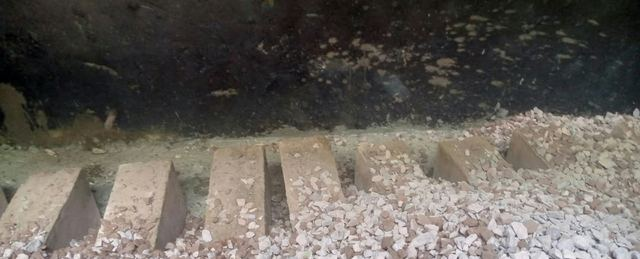
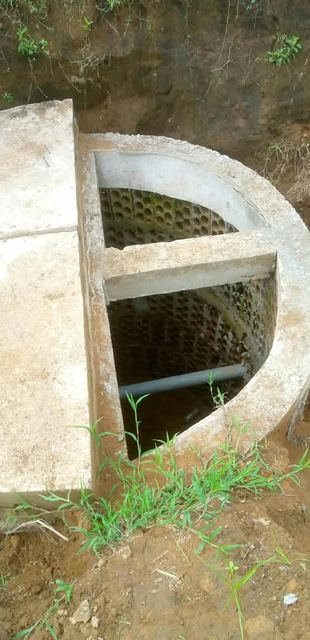
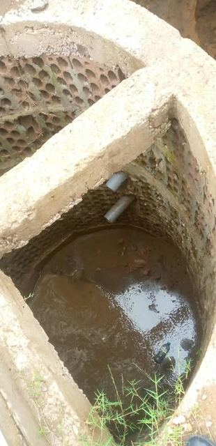
Conception et modélisation 3D

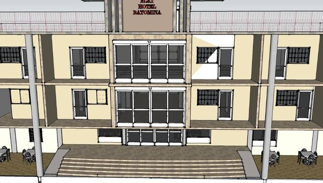

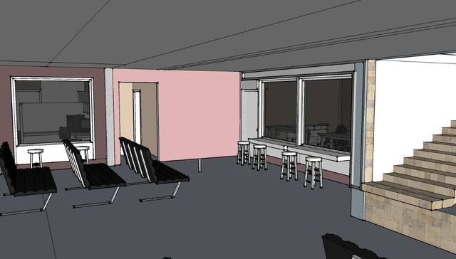


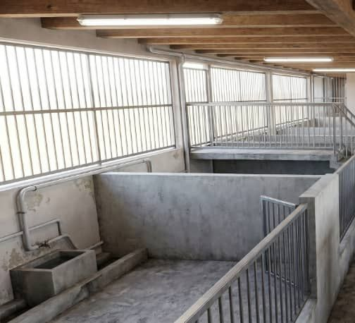

Défauts relevés lors de nos visites


Géomatique et topographie


L’équipe au travail
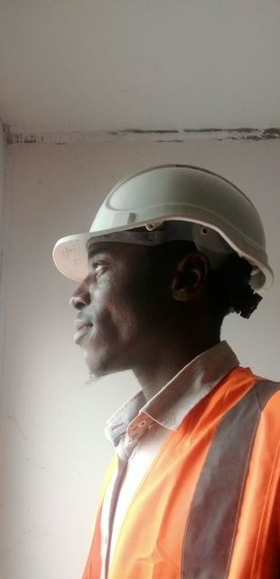


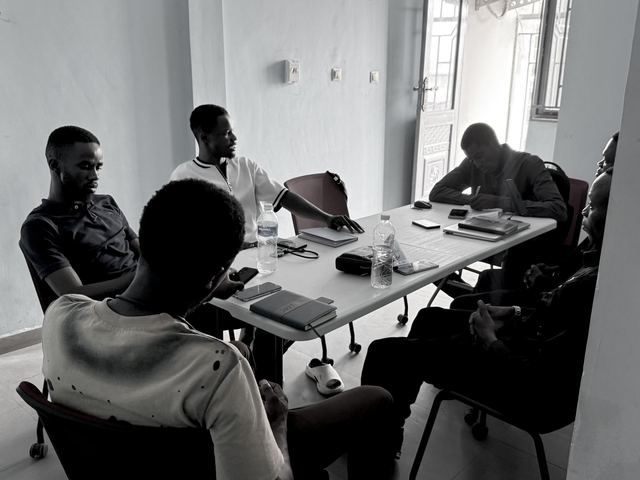


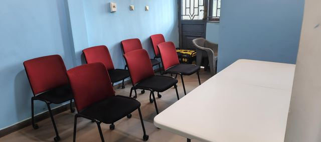
Environnement, forêts et tourbières


Avec les communautés

Recherche et conférences


Fiches projets détaillées
Chaque mission fait l’objet d’une fiche (contexte, intervention, résultats, outils), publiée uniquement avec l’accord de nos clients. Pour obtenir nos références détaillées, contactez-nous.